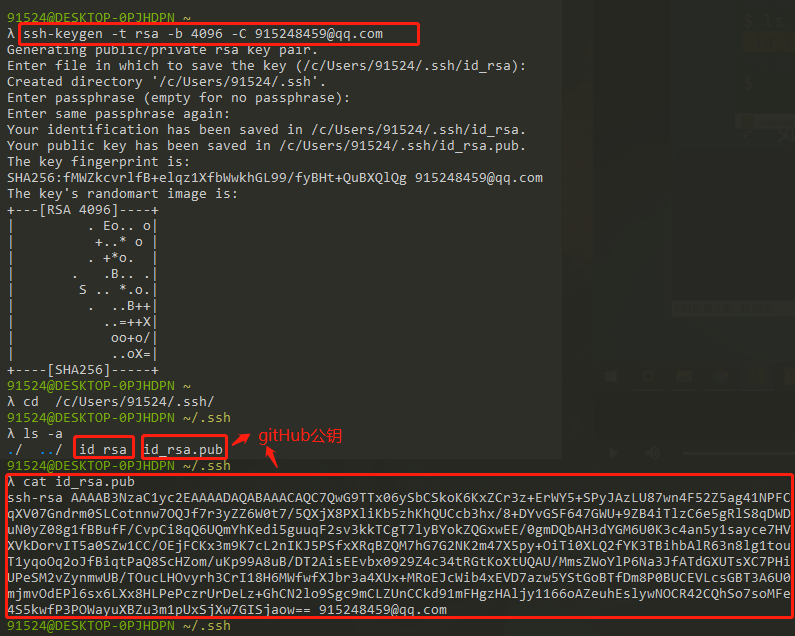
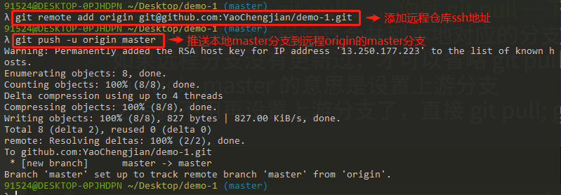
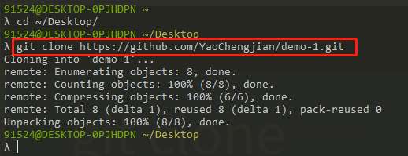

POSTS
4 - [Git入门]git远程仓库GitHub
操控远程仓库GitHub
1.如何生成ssh key(需要在github上面填写公钥)
a. 运行ssh-keygen -t rsa -b 4096 -C 你的邮箱
b. 一直回车，直至到没有提示

2.如何测试配对成功
a. ssh -T git@github.com
b. 如果问你yes/no，请回答yes并回车
3.上传代码
a. 新建GitHub Repo，赋值其ssh地址
b. git remote add origin git@xxxxxxxx
c. 在本地仓库添加远程仓库地址
d. origin是远程仓库的默认名字，可以换，建议不要换
e. 不要使用https://地址，因为每次都需要密码
f. git push -u origin master 推送本地master分支到远程origin的master分支

4.如何下载代码
a. gitclone git@xxxx[目标路径]
b. 如果是不同机器，要写上传新的ssh key[一机一key]
